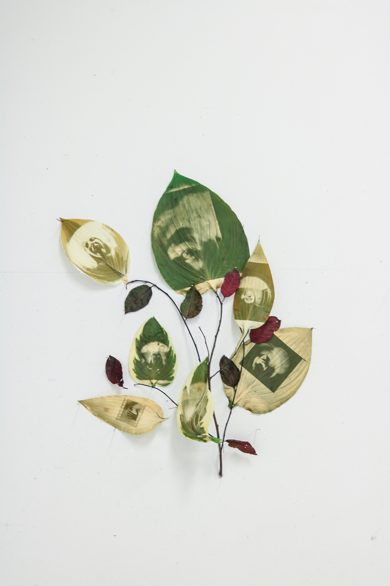
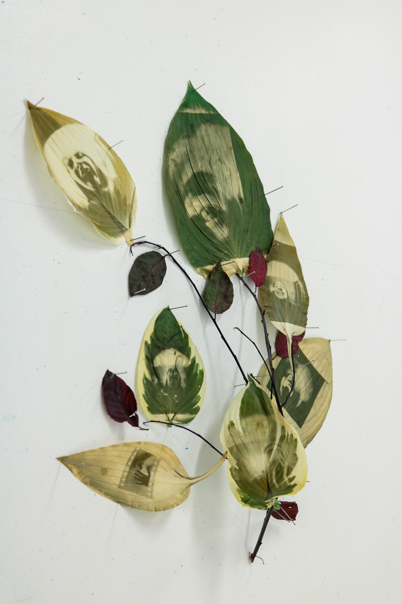
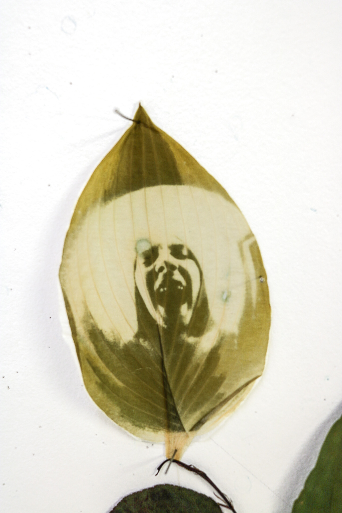
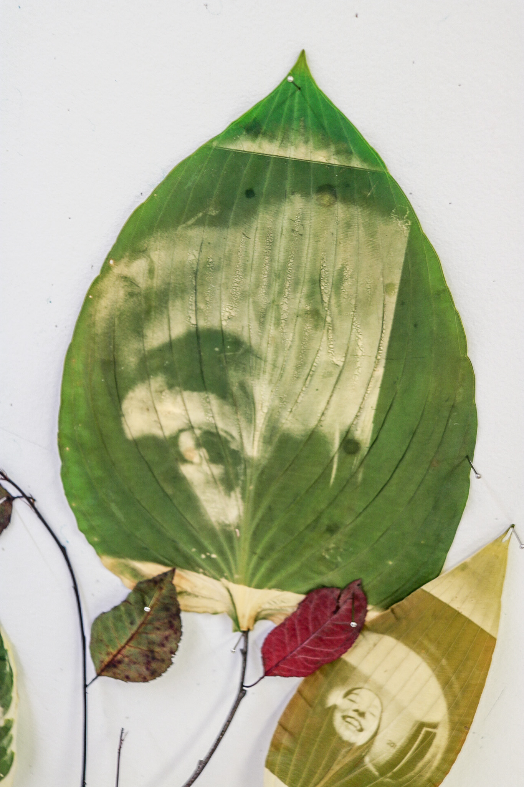
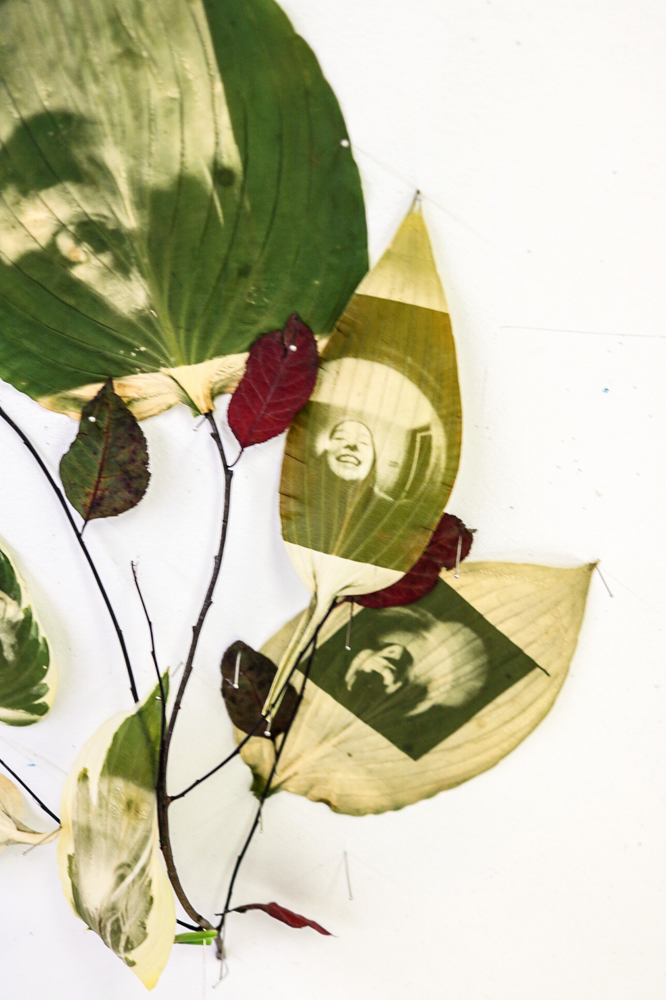
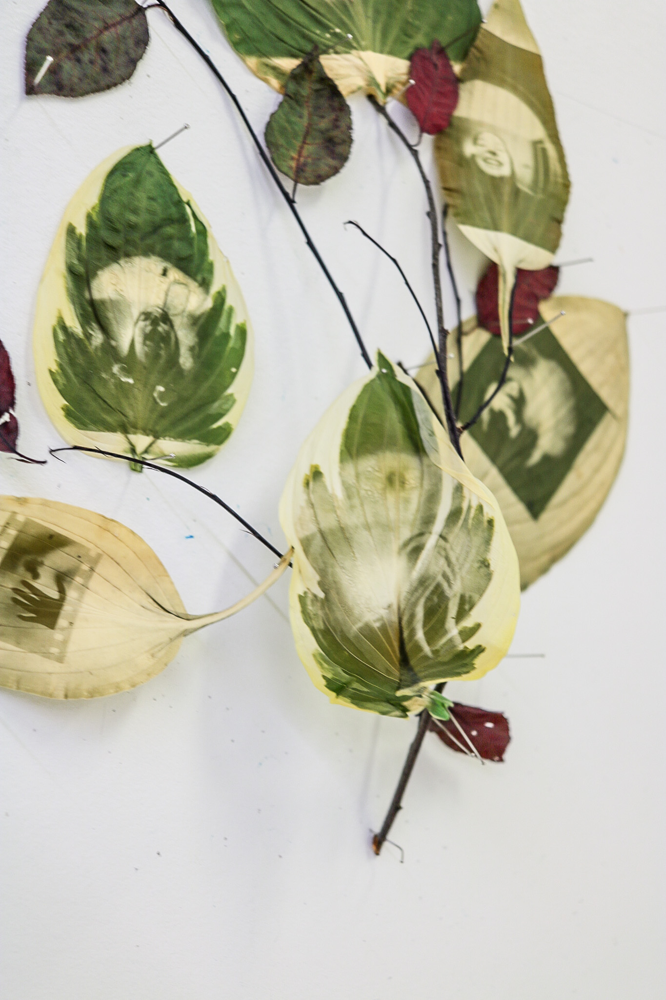
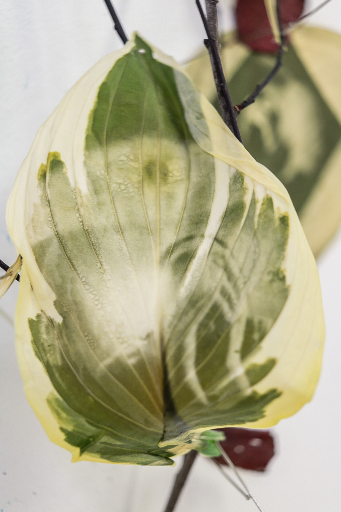

J’ai sonné sept fois
Ce projet de chlorophyll print a été créé grâce à des images sur acétate superposées sur des feuilles. Lorsque laissées au soleil pendant quelques journées, les images viennent s’imprégner sur les feuilles en altérant la chlorophylle. Ce projet basé sur des autoportraits de moi à travers l’œilleton de ma porte. Je cherchais à faire un lien entre l’attente, la vitesse, l’émotion humaine ainsi que la nature stable, lente.






